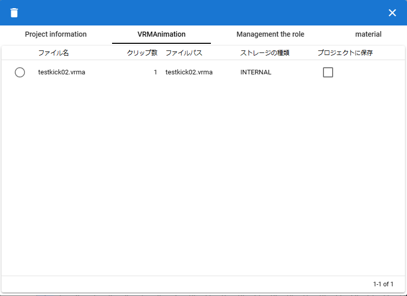

13. Project settings
13.1. Open project settings
Configure settings for the currently open project.
Click
Settingsfrom theAnimationstab in the ribbon bar.

Here you can:
Editing the project name and other specified information
Manage roles and casts included in your project
Material management
Manage additional files included in your project, such as VRMAnimation
13.2. Fill in basic project information
The Project Information tab allows you to enter the following information: It does not affect animation, poses, or other effects. This is only for writing notes.
See Project information for item descriptions.
- FPS:
Specifies the basic value related to the overall speed of the animation. By default, the time interval is calculated as
FPS / 6000.0. FPS is used in the calculation.- default duration:
Specifies the number of seconds to change per frame. If there are multiple frames between keyframes, it will be calculated as
default interval * number of frames.In addition, in the key frame settings, you can individually specify the interval until the key frame is reached.
See Set keyframe intervals for details.
13.3. VRMAnimation
On this tab, you can see a list of VRMAnimations currently open throughout the app.
For item descriptions, see VRMAnimation in screen configuration.
13.3.1. Delete VRMAnimation
Check the .vrma files you want to delete.
Click the delete button in the top left.
A confirmation message will be displayed, so click the OK button if you agree.
13.3.2. Include in project file
VRMAnimation files with
Save in projectchecked can have their file paths included in the project file.By including it in the project, the target .vrma file will be opened and read at the same time when the project file is opened. That VRMAnimation will be available immediately.
Note
The target is only .vrma files saved in the internal storage or files that have been posted in the history for each OS version.
13.4. Role management
Manages information on currently open VRMs and other objects, and the roles (roles, timelines) associated with them.

See Role management for item descriptions.
Here you can:
Deleting roles and casts (objects)
Change cast associated with role
Change role name (display name)
See Assign Cast to Role for changing role and cast assignments.
13.5. material
Manage the image assets open in the current app or project.
See material for item descriptions.
13.5.1. Material management
You can manage texture files etc. so that they can be used throughout this application.
Click the
Animationtab on the ribbon bar ~Settingsbutton.Open the
Materialstab.

13.5.2. Add material

Select the desired material type from
Material Type.Select
ApporProjectas thelocation of resources.Press the
Addbutton.An Add Material pop-up window will appear.
Click
material fileto select a file from the terminal.In
Material Label, enter a name that you can easily manage.Press the OK button to add the material to the app.
(*)After adding, it will be displayed in the list with a preview.
Note
How to use the material after adding it
It can be used in OtherObject’s texture, Stage’s
UserStagetexture, etc. Please specify the material name you want to use in each property.If you select a different material name, the reference will be canceled.
You can set one texture to multiple objects, but since it is shared throughout, if you delete the material, the changes will affect all the objects.
Each object is referenced by its material name, so it doesn’t care what the actual texture or other file is. If you are distributing the project file for other users to use, please make sure that they use the texture files as expected.
13.5.3. Update material
Once you have added a material, you can update the label name or reload the image.

- Update label name
Clicking the material name cell in each row will display an input dialog. Enter the new name there.
- Reload an image
Used for materials within a project. If a project loaded (imported) from a file contains materials, the files that make up any of the materials are not loaded. You will need to specify and load the expected images and other files again.
13.5.4. Delete material
Check and select the material you want to delete from the list.
Press the delete button.
Caution
If even one of the materials is referenced somewhere, it cannot be deleted. Please remove the reference from that object (select another material or cancel the selection with
--), make sure it is no longer referenced anywhere, and then try again.The actual material files will also be deleted from the dedicated storage within the app.